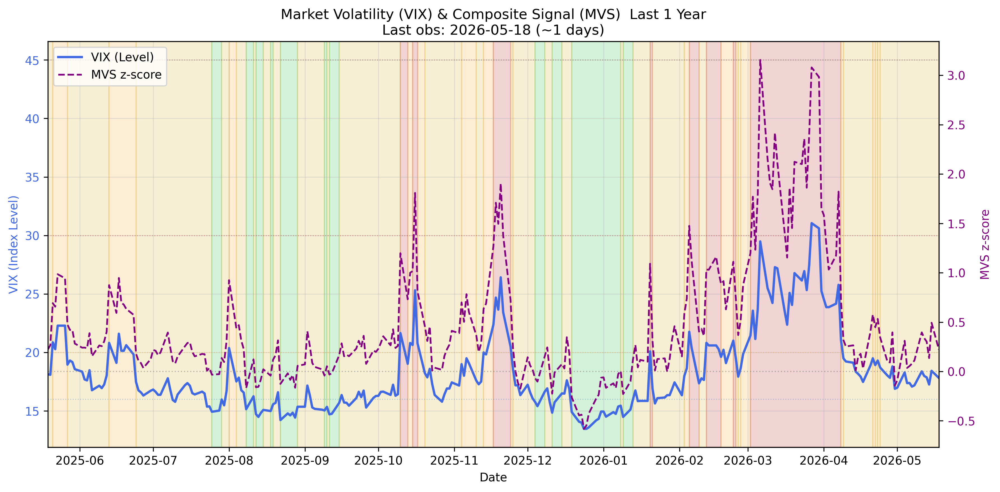
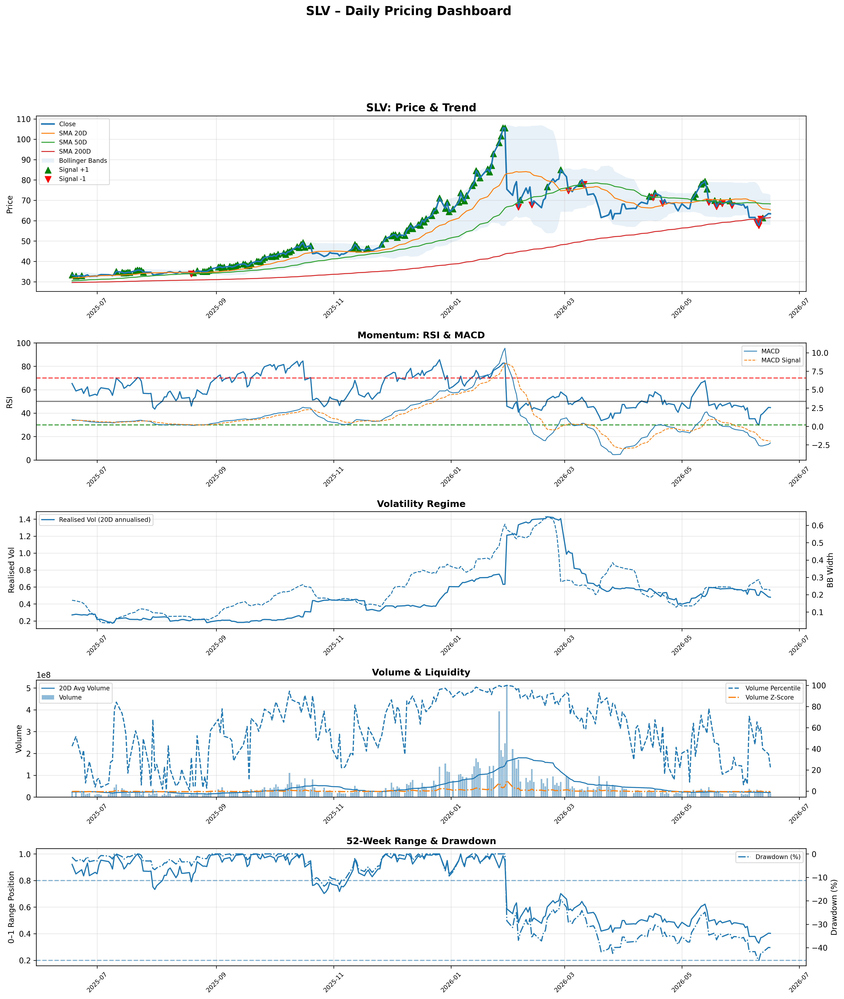
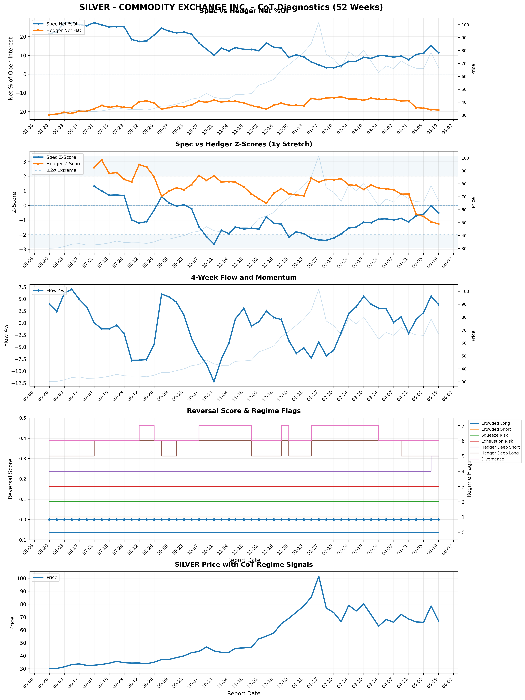
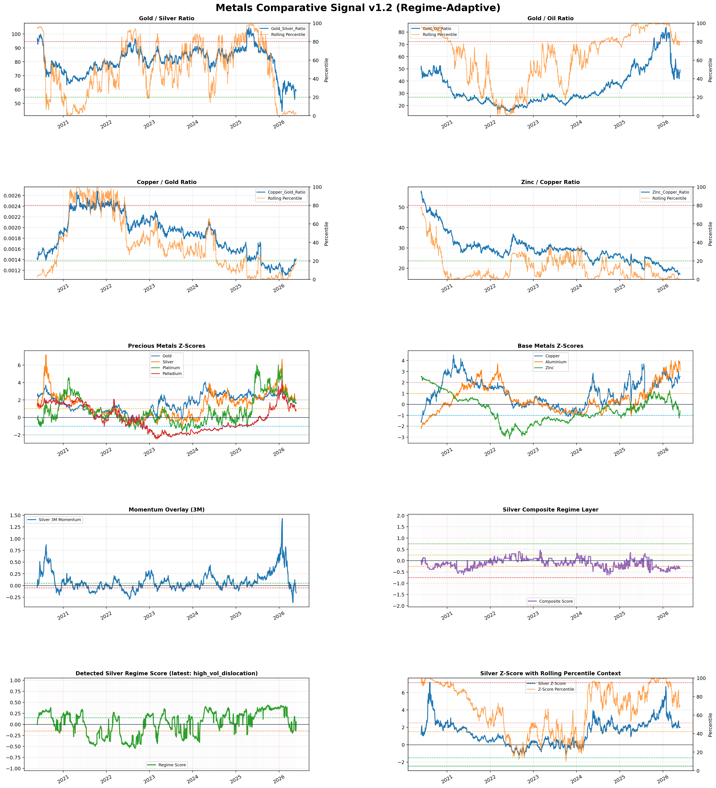

Investor Anatomy Series
History-backed architecture-aligned silver synthesis built from the latest Silver Market Analyst input stack.
The silver market is currently navigating a high-stakes transition from an overextended mid-March peak toward a structurally higher pricing floor, characterized by extreme realized volatility and a significant divergence between speculative positioning and recent price action. While the metals complex at large shows signs of exhaustion following the early March blow-off top, silver is uniquely positioned at the intersection of a stressed volatility regime and a resilient liquidity expansion. The core thesis posits that the recent 20 percent drawdown is not a trend reversal but a violent mean reversion toward a newly established institutional regime that values silver between 75 and 93 dollars per ounce.
Tactical support is emerging from a "Stress Override" logic as the VIX sustains levels above 30, activating safe-haven demand that offsets traditional real-rate headwinds. Despite the moderate outflow bias seen in the broader metals comparative signal, silver's internal mechanics—specifically the massive institutional inflows into the iShares Silver Trust and a persistent physical deficit—suggest that the asset is currently carving out a liquidity-backed bottom. We are witnessing a professional accumulation phase disguised by high-frequency volatility, where the risk of long liquidation is being replaced by a structural long-build scenario.
Regime Architecture
The silver market is governed by a Liquidity Expansion regime, confirmed by an M2 three-month momentum of 1.66 percent and an accommodative r-star proxy stance. This liquidity dominance serves as a primary pillar, effectively neutralizing the bearish pressures typically exerted by real rates. Although the 10-year TIPS yield remains elevated at 1.85 percent—comfortably above its six-month moving average—the rules engine prioritizes the liquidity and stress dimensions, which are currently providing a tailwind for hard assets as a hedge against systemic instability.
Simultaneously, the market has entered an "Elevated Stress" state, with the VIX reaching 31.05 and the Market Volatility Signal z-score hitting 3.08. Historically, such conditions mandate a defensive posture; however, within the precious metals context, this stress acts as a catalyst for safe-haven flow logic. The architecture is currently one of "Crisis-lite" support, where financial stress outweighs the neutral-to-bearish signals coming from the US Dollar and stable inflation term structures, creating a fragmented but ultimately supportive backdrop for silver's valuation.
Linked Signal: Silver Signal Interpreter
Linked Signal: VIX Market Volatility

Market volatility (VIX) regime signal
Macro Signal Stack
The macro signal stack presents a complex interplay of conflicting currency and interest rate drivers. The US Dollar regime is classified as neutral, a result of the tension between a weakening USD Index and strengthening speculative positioning in the individual currency market. This lack of a clear directional impulse from the greenback allows silver to trade more closely with its internal liquidity markers and volatility proxies rather than being purely suppressed by currency headwinds. Inflation signals remain in a stable, neutral zone, with PCE and market-implied inflation providing no immediate reason for aggressive repositioning.
Real rates represent the most significant headwind in the stack, yet their influence is currently sidelined by the Stress State. As long as the VIX remains in its "Stressed" regime, the historical correlation between rising TIPS yields and falling silver prices is expected to remain decoupled. This creates a macro environment where silver is treated less as a commodity and more as a monetary hedge, allowing it to maintain its mid-range 52-week position despite the lack of supportive inflation momentum or aggressive Fed-driven liquidity injections.
Linked Signal: VIX Market Volatility
Market volatility (VIX) regime signal
Market Expression Layer
Silver's recent price action, closing at 63.44 with a 4.39 percent daily gain, reflects a market attempting to find equilibrium after a period of intense realized volatility. The technical trend is currently in a state of flux; while the price has broken above the 200-day moving average, it remains below the 50-day average, indicating that the medium-term momentum has not yet fully recovered from the recent sell-off. Realized 20-day volatility is in the 84th percentile, highlighting that the current price discovery process is occurring within a high-noise environment that favors professional liquidity providers over retail momentum traders.
The 52-week position of 0.44 suggests that silver is neither chronically oversold nor overextended in a long-term context, despite being roughly 40 percent below its recent highs. Volume and liquidity metrics are near normal levels, with a volume z-score of 0.27, suggesting that the recent price bounce is being met with standard participation rather than a broad-based panic. This "mid-range" expression aligns with a market that has completed its initial liquidation phase and is now entering a period of volatile consolidation as it tests the lower bounds of the new institutional pricing regime.
Linked Signal: Price Signal Decoder

Silver price momentum and trend diagnostics
Positioning and Flow Layer
Commitment of Traders data reveals a "Balanced Long Bias" regime, where speculators maintain control with moderate sponsorship. Despite the recent price weakness, speculative net positioning increased to 9.86 percent of open interest, triggering a "bottoming risk" signal as flow momentum diverged positively from price. This suggests that the sell-off has lost its sponsorship from sellers, and commercial hedgers are concurrently reducing their net short exposure, with z-scores approaching historical extremes of 1.17. This positioning alignment points toward a reduction in bearish pressure and an accumulation of tactical long exposure.
The ETF flow layer provides further confirmation of this institutional appetite. The iShares Silver Trust saw a massive inflow of 616 million dollars on March 23rd, even as the broader metals complex experienced distribution. While the overall ETF flow regime is classified as neutral following a period of distribution in early March, the recent stabilization of shares outstanding and the recovery of the 20-day flow z-score from -3.32 to -0.96 indicate that the "Extreme Outflow" phase has definitively ended. This capital reentry provides a critical liquidity floor for the asset.
Linked Signal: Silver Positioning Analyst

Silver CoT diagnostics
Linked Signal: SLV ETF Flow Signal

SLV ETF flow pressure diagnostics
Cross-Asset Context
In the broader metals complex, silver currently exhibits a high degree of standardisation exhaustion, with a Z-score of 2.03, the second highest after Aluminum. This "Strong Sell" signal in the comparative model reflects the sharp price reversal since the March 10 peak, where the complex as a whole transitioned into a "Moderate Outflow Bias." Silver’s high beta to gold—which itself carries a 1.88 Z-score—means it is bearing the brunt of the sector-wide mean reversion. However, the Gold-Silver ratio and silver's relative value against copper suggest that silver remains in the 95th percentile of its historical relative pricing, indicating it is still viewed as a leader within the hard asset class.
The interaction with the equity and volatility markets is equally critical. Silver’s ability to reclaim ground alongside equities following the geopolitical de-escalation in the Middle East suggests that it is participating in the "relief rally" narrative. However, the persistence of the VIX above 30 creates a unique divergence where silver acts as both a risk-on beneficiary and a risk-off hedge. This cross-asset role is typical of silver during regime shifts, where its industrial and monetary identities compete for dominance in the price discovery process.
Linked Signal: Metals Comparative Signal

Relative metal strength and comparative diagnostics
News and Narrative Layer
The narrative landscape has shifted from aggressive liquidation to cautious stabilization over the last seven days. The primary driver of this relief is the unwinding of the "fear trade" following a five-day pause in strikes on Iranian energy infrastructure. This geopolitical de-escalation has allowed silver futures to bounce off four-month lows, supported by a softening US dollar and cooling inflation concerns. The news flow is currently supportive in the short term, though the market remains unresolved regarding the long-term price floor, as it weighs institutional inflows against operational challenges in the mining sector.
On the supply side, the narrative is more challenged. Recent suspensions of underground mining at IMPACT Silver’s Plomosas site due to geological hazards, alongside broader ESG pressures and corporate consolidations in the Australian market, highlight persistent supply-side risks. These disruptions reinforce the structural deficit narrative advocated by industry bodies. Investors are now transitioning their focus from geopolitical panic to industrial demand forecasts, watching closely for upcoming manufacturing PMI data to confirm if the silver recovery has a fundamental basis beyond simple mean reversion.
Linked Signal: Silver News Narrative (7D)

Silver 7-day narrative events timeline
Linked Signal: Silver News Compression (7D)
Structural Research Layer
Institutional research has undergone a seismic shift in early 2026, with a definitive upward re-rating of silver's value. The median forecast for the year has moved from the 55-dollar range in late 2025 to approximately 79.50 dollars. Individual targets from major institutions such as Fitch Solutions and BMO now range between 75 and 93 dollars, driven by the realization that silver is entering its sixth consecutive annual market deficit. This consensus reflects a fundamental reassessment of silver's role in the energy transition, particularly its expanding use in solar photovoltaics and AI-related data centers.
Extreme outliers remain, most notably a tactical three-month target of 150 dollars from Citi, suggesting that while the annual average expectations are tightening, the potential for liquidity-driven spikes is extremely high. The structural research layer highlights that "thrifting" in the solar sector is currently only a minor headwind compared to the massive demand impulse from global electrification. This shift in the target distribution indicates that the "old" price levels are increasingly seen as stale, and the market is recalibrating to a regime defined by physical tightness and robust industrial demand.
Linked Signal: Silver Price Research

Institutional silver target history and distribution
Integrated Synthesis
The synthesis of the current signal stack reveals a market that is fundamentally stronger than its recent price drawdown suggests. The core of the alignment lies in the transition from a speculative "long reduction" phase to a "long build" regime, supported by a massive 616 million dollar institutional ETF inflow and a positive flow-momentum divergence. While the metals comparative signal warns of exhaustion, the internal silver positioning—specifically the reduced net short exposure from hedgers—indicates a localized bottoming process. This is further bolstered by the "Stress Override" from the VIX, which is currently channeling safe-haven capital toward silver despite elevated real rates.
Looking ahead, the interaction between liquidity expansion and the structural physical deficit forms the primary bull case. Silver is essentially caught between a tactical "Strong Sell" on a cross-asset basis and a structural "Strong Buy" on a fundamental and positioning basis. The resolution of this conflict is likely to manifest as a period of high-volatility consolidation, where the market tests the 75 to 80 dollar range—the current institutional median—while flushing out late-cycle speculative longs. The presence of the Stress State ensures that silver will remain a focal point for capital looking to hedge against both currency instability and geopolitical risk.
Linked Signal: Silver Signal Interpreter
Linked Signal: Silver Price Research
Institutional silver target history and distribution
Scenario Framework
The base case scenario anticipates continued consolidation as the distribution seen in early March exhausts itself, with silver prices drifting toward the 75-dollar institutional floor. In this regime, volatility remains high but the directional bias turns positive as speculative support holds and ETF flows shift toward accumulation. This path assumes that the current pause in geopolitical tensions persists and that US manufacturing data remains resilient enough to support industrial demand without triggering a massive hawkish shift in interest rate expectations.
An upside secondary scenario involves a rapid price recovery, potentially triggered by an acceleration in the speculative "Long Build" or a sudden breakdown in the US Dollar. If the VIX moves from its current "Stressed" state to a "Crisis" regime, silver could see a liquidity-driven spike toward the 93 to 150 dollar tactical targets mentioned in structural research. Conversely, the downside residual risk is a trend liquidation event. This would occur if price weakness forces a reversal in current flow momentum, or if a sudden contraction in global liquidity—marked by a falling M2 momentum—strips away the support floor, potentially re-testing the mid-50s.
Risk and Invalidation
The primary risk to the current bullish interpretation is a transition out of the "Stressed" volatility regime. Should the VIX drop below 20 and the MVS z-score fall below 1.0, the "Stress Override" would be invalidated, leaving silver exposed to the full weight of the 1.85 percent real-rate headwind. In such a scenario, the safe-haven bid would evaporate, and silver would likely undergo a second leg of liquidation to align with its traditional macro correlations. Additionally, any multi-week flip in flow momentum to negative would signal that the current speculative bottoming risk was a false positive, indicating a deeper regime shift toward "Heavy Outflow."
A second invalidation point lies in the US Dollar regime. If the current neutral state resolves into a "Strong USD" trend, the macro factor multiplier would further penalize the metals composite, potentially forcing silver to breach its 200-day moving average on the downside. We must also monitor for any significant shift in industrial demand narratives; a contraction in global manufacturing PMIs or a significant technological breakthrough in silver "thrifting" for solar cells would undermine the structural deficit thesis that currently anchors the long-term institutional price targets.
Closing Statement
In summary, silver is currently a market of high internal tension, where tactical exhaustion is being met by structural accumulation. The convergence of a stressed volatility regime, expanding liquidity, and a significant institutional re-rating suggests that the recent price volatility is a symptom of a regime transition rather than a terminal decline. While the path forward remains characterized by high noise and significant drawdown risk, the underlying architecture of the market—from positioning momentum to ETF flows—points toward a resilient recovery. Strategic attention should remain on the VIX and speculative flow momentum as the primary gauges for the sustainability of this new pricing floor.
Source Inputs
| Input | Signal ID | Latest Date | Report Link |
|---|---|---|---|
| Price Signal Decoder | silver_slv_pricing | 2026-03-28 | Open report |
| Silver Positioning Analyst | silver_individual_market_analysis | 2026-03-28 | Open report |
| Silver News Narrative (7D) | silver_news_signal_7d | 2026-03-28 | Open report |
| Silver News Compression (7D) | silver_news_compression_7d | 2026-03-28 | Open report |
| Metals Comparative Signal | metals_comparative_signal | 2026-03-28 | Open report |
| SLV ETF Flow Signal | slv_etf_flow_signal | 2026-03-28 | Open report |
| VIX Market Volatility | market_volatility_vix_signal | 2026-03-28 | Open report |
| Silver Price Research | Silver_Price_Research | 2026-03-28 | Open report |
| Silver Signal Interpreter | silver_regime_state_deterministic | 2026-03-28 | Open report |
Generated: 2026-03-29 01:37 UTC | Model: models/gemini-3-flash-preview | Source: signal_history.jsonl